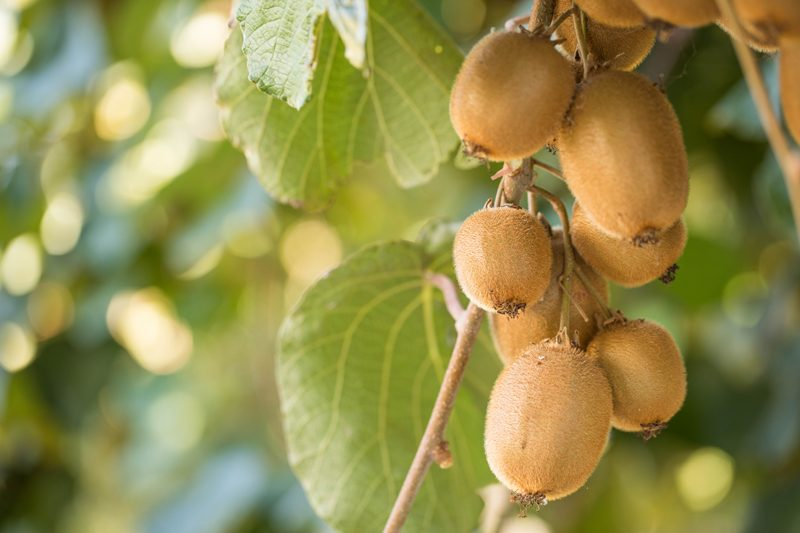
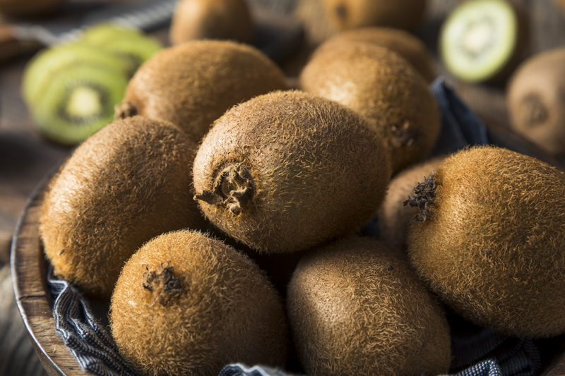

Kiwifruit – Furry Fruit
Have you ever seen how kiwis grow? Do you pluck them off a bush or tree? Nope, they are grown on a vine that can reach up to twenty feet. Once planted it takes between three to five years for the fruit to be harvested. Kind of makes a person really appreciate the convenience of motoring on down to the grocery store to pick up some kiwi, doesn’t it? I believe that it is very important to know how and where our food comes from. I find it far more exciting to learn how fresh food is grown versus how a food is manufactured in a warehouse. Don’t you?

Health Benefits
Folic Acid
- Kiwifruit provides 10% of the U.S. Recommended Daily Allowance of folic acid, or folate, which is essential to the reproduction and formation of red blood cells.
- Lack of folic acid can contribute to some problems of anemia, and it is especially important for expectant mothers to protect against birth defects.
Vitamin C
- Kiwifruit has almost twice the vitamin C of an orange.
- A serving of kiwifruit (two medium) provides about 230% of the U.S. Recommended Daily Allowance.
- Vitamin C aids in wound healing, iron absorption, and maintains bones, blood vessels, and teeth.
Potassium
- A serving of kiwifruit contains an average of 20% more potassium than a banana.
- Potassium is an important mineral that controls heart activity and works with sodium to maintain fluid balance in the body.

My mouth is tingling!
Have you ever experienced an itchy, or tingling sensation in your mouth or perhaps the corners of your mouth start to sting? Kiwis contain specific enzymes called bromelain (sourced from pineapple) and actinidain (found in kiwis, as well as mangos, papayas, and bananas in lower amounts) that break down proteins, including, yeah, the ones in your mouth.
These two enzymes are so potent that they are actually used commercially to tenderize meat. But, not to worry, these enzymes are not harmful to humans. However, it is important to be aware of the difference between a normal reaction and an allergic one. The actinidain in kiwis, in particular, is a common allergen, so if you experience swelling, rashes, vomiting, or unusual pain, see a doctor. If you or someone you know has a latex allergy, the risk of reacting to fruits such as kiwis, bananas, and avocados is increased.
Is the Skin Edible?
- You can eat the whole kiwifruit, including the skin.
- The skin is rich in fiber.
- If you’re not fond of the furry texture of the kiwi, you can simply brush them off before you take a bite or you can remove the skin altogether.
When Selecting Kiwi
- Kiwi has a sweet taste, similar to a mixture of banana, pineapple, and strawberry.
- Choose plump, fragrant fruit that yields to gentle pressure.
- The outer surface should be unblemished and with no soft, bruised spots or wrinkled skin.
- Unripe fruit has a hard core and a tart, astringent taste. If only firm kiwis are available, ripen them for a few days before eating them.
How to Ripen Kiwi
- To ripen, place them in a paper bag with an apple, banana, or pear, and let stand a day or two at room temperature.
- Ripe fruit contains ethylene, a natural emitted gas that hastens the ripening process.
- If you store an unripe kiwi in the fridge, it can take five to seven days to ripen fully.
How to Store Kiwi
- They’ll keep for several days at room temperature and up to four weeks in your refrigerator.
- They can even be held in commercial storage for over ten months. Do you know how fresh your fruit is?
© AmieSue.com